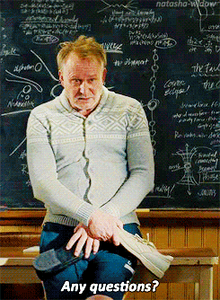

The Process of Research
"It's not a bad thing finding out that you don't have all the answers. You start asking the right questions."
Erik Selvig, Thor
Since our early youth we are conditioned to learn new things through school. We take classes to learn how to read, write, do some math, etc. Later on it becomes much more structured. By high school we take some required courses in addition to some electives. By college we have more freedom on what we want to take but learning is still structured by coursework. For example one cannot take Differential Equations before taking Calculus. Although such structure provides us with a guide on what we need to know before learning a particular topic it also limits us. How? Just think about any research paper you had to write. Might have been about the life of Winston Churchill or how the Apollo program was developed. How did you find out more about such things? The typical way to perform research is:
1. Pick a topic
2. Search for any articles or books on such topic and read them
3. If you get stuck or don't understand something go back to #2
However, this is a stark contrast to how most people are used to learning. After years of school most of us are used to having the information simply presented to us. All the books, readings, practice problems, essays are simply provided to us in some way or another. The teacher would explain to us what we needed to know and provide examples of such. Afterwards we would reinforce such concepts through practice such as classwork or homework. After several classes we would be tested on such concepts. We got feedback from such tests and moved on. Research doesn't work like that. The information isn't organized neatly for one to simply follow. Instead it has to be gathered together from various sources. Nobody tells us when we have enough information or if what we found is the right answer. Instead we have to find as much information as possible to back up our claims. Although for undergraduate and high school work we typically have a teacher/professor to guide us on what to do and knows what the answer is that is not the case for more advanced research particularly in graduate school and science.
As an example, let's assume you are researching quantum algorithms (from personal experience). This area requires a lot of advanced physics, mathematics, and computer science knowledge. For a computer scientists they would only need to learn physics and perhaps some additional math. For a mathematician they would need to read up on computer science and physics topics. But how would one do so? Would you simply check out several books on physics and computer science, read them all, then start reading up on quantum algorithms? That would actually be one of the most ineffective ways of performing research. It wastes a lot of time on something which could take much less. It's one of the main reasons why many people don't succeed in graduate school, particularly PhD programs. Instead of reading all the books possible on introductory topics try reading a paper or book on the topic you intend to research. If there's something you don't understand then look up other papers and books on that subject you don't understand. Use the textbooks as references to brush up on what you didn't get from reading the previous paper or book.. Many people (including me) have made the mistake assuming that we need to read up everything in various textbooks before tackling the research problem. Going back to the example let's assume you have a background in computer science but have only taken introductory physics courses. Pick up a paper on quantum algorithms and read it. Take notes on what you get and what you don't. Afterwards look up the topics you don't get in various textbooks and papers but ONLY those topics, don't bother reading the entire book unless you absolutely need to know the material to understand the topic you're trying to learn. Then go back to the paper and see if you understand what the authors are writing about. If still not, look up what you didn't get again. Repeat the process until you understand the paper.
The whole point of research is to find an answer to some problem that no one knows the solution to. To do this one must first find out what they don't know because if one doesn't then they will ask the wrong questions. Instead of asking 'How many books do I need to read to answer this question?' one should ask 'Where can I find the information to answer this question?'
